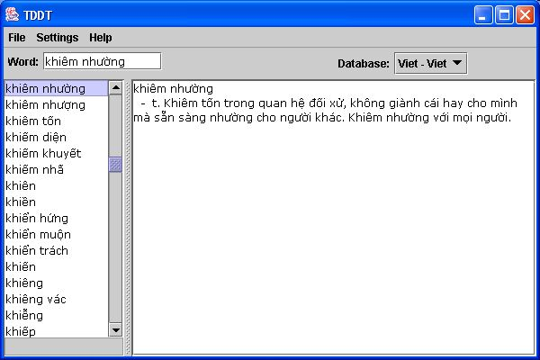

TDDT - the Java program for accessing dictionaries in DICT format
Installation
- Check that a Java interpreter version 1.2 or later is installed on your computer. (Open a command window, e.g., xterm on Unix or DOS box on Windows, and type "java -version" and see if the version number of Java is printed.) If Java is not yet installed, download the Java Runtime Environment from java.sun.com and install it first
- Download the dictionary program (0.3 MB)
- Download at least one of the databases (the other can be
installed optionally.)
- Extract the ZIP files to some directory, say
/home/nvt/VietDictionary. Be sure to keep the directory structure. You should see in /home/nvt/VietDictionary a subdirectory dict
- Double-click on the file vietdictNN.jar to start the dictionary program (NN is the version number). If
*.jar-files are not correctly associated with the Java interpreter, you need to run the batch script tddt.bat in the dictionary dict to start the program.
- Click File->Add database, a file dialog will pop up. Please select an initialization file (
ev.ini, fv.ini, vv.ini etc.) to add dictionary databases. Repeat this step until you have added all dictionaries you want to use. The dictionary to be used can be selected from the database list.

- To lookup a word please type in the input field and press Enter. As you type the partial matches are displayed in the list on the right. You can also look up a list by double-clicking on an entry from that list or on a word in the result area.
- With Settings->Save settings you can save the list of databases you have added.
- The dictionary lets you type Vietnamese in Telex, VNI or VIQR mode. The Vietnamese input method can be selected via Settings->Viet input.
Planned features
If you want to help improving the program, you can download the source code and develop the
program further. The program and the databases are distributed under GNU General Public
License. Please use the
Forum to share your advices and suggestions with other users and
developers.
Version history
Copyright Notice
Copyright © 1997-2004 Ho Ngoc Duc and the Free Vietnamese Dictionary Project. All Rights Reserved.
The dictionary databases may have specific licenses, please lookup the entry 00-database-info for details.
The dictionary program, its source code and the dictionary databases are distributed under GNU
General Public License as published by the Free Software Foundation; either version 2 of the License, or (at your option) any later version.
This program is distributed in the hope that it will be useful, but WITHOUT ANY WARRANTY;
without even the implied warranty of MERCHANTABILITY or FITNESS FOR A PARTICULAR PURPOSE.
See the GNU General Public License for more details.
Permission to use, copy, modify, and redistribute this software and its documentation for personal, non-commercial use is hereby granted provided that
this copyright notice and appropriate documentation appears in all copies.
Ho Ngoc Duc <duc@informatik.uni-leipzig.de>